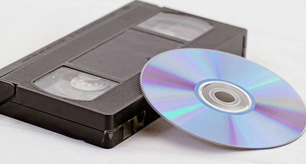
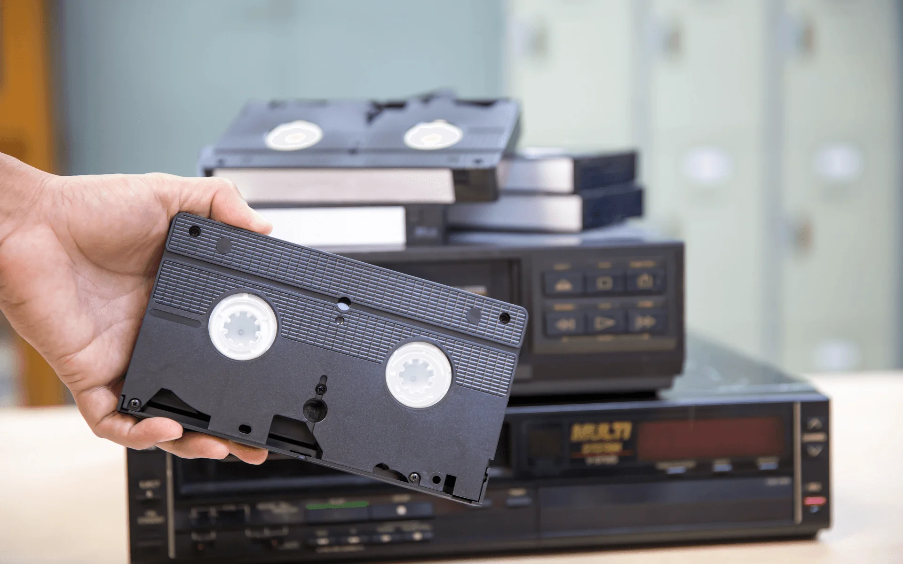
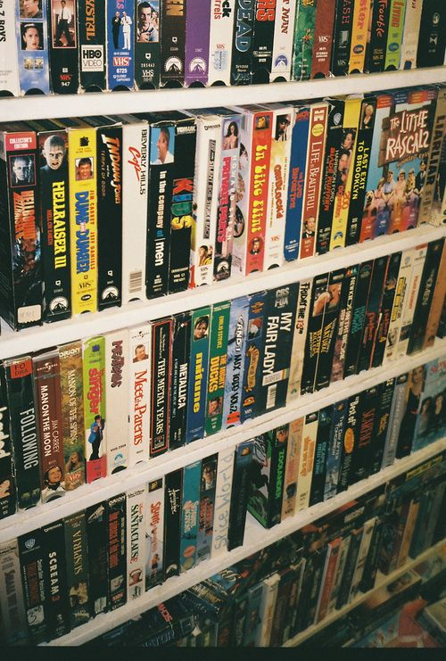

Exploring the Legacy of VHS: The Golden Age of Home Entertainment
The Video Home System (VHS) revolutionized home entertainment in the late 20th century, bringing movies and television shows directly into living rooms across the world. Introduced in the 1970s, VHS quickly became the dominant format for video recording and viewing, and it played a major role in shaping the modern home movie-watching experience. But what made VHS so special, and how did it change the way we consumed media?
The History of VHS
VHS was developed by the Japanese company JVC in 1976 and became the standard for video recording in the 1980s. The format was a breakthrough because it allowed users to record television broadcasts and watch movies at home. VHS cassettes were affordable, and the VCR (Video Cassette Recorder) became a must-have household appliance. By the mid-1980s, rental stores like Blockbuster were popping up everywhere, offering an expansive library of VHS tapes.
Key Milestones of VHS
- 1976: Introduction of VHS by JVC.
- 1980s: VHS dominates the market.
- 1990s: VHS peak, with thousands of movies available in rental stores.
- 2000s: Decline of VHS with the rise of DVDs and digital formats.
Why VHS Was Popular
VHS dominated the video market for decades due to its affordability and ease of use. Unlike earlier formats, VHS tapes were durable and could be reused multiple times, making them an economical choice for consumers. The VCR allowed families to record their favorite shows and movies, creating a new era of entertainment freedom. This accessibility led to a boom in video rental businesses, and home movie nights became a staple in households around the world.
